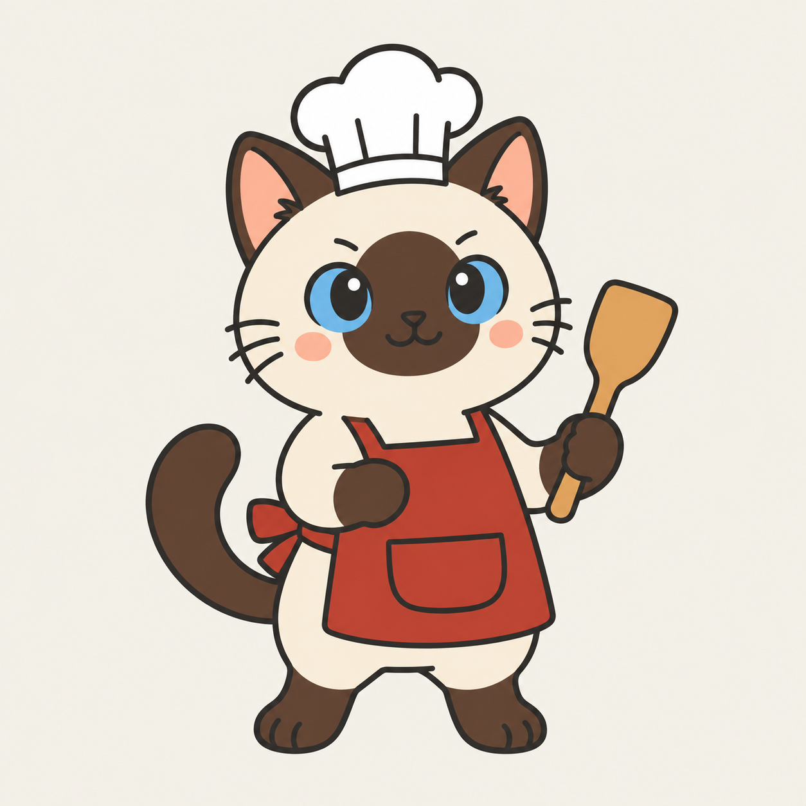
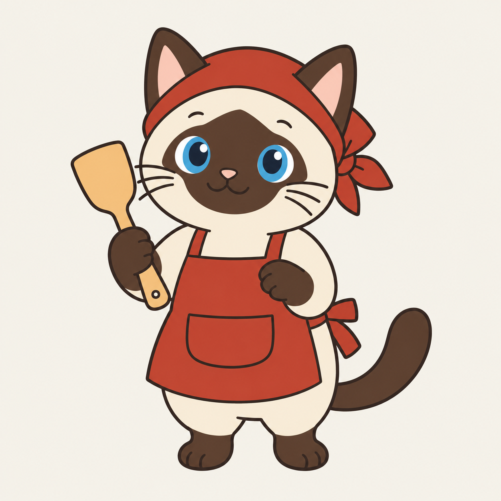

<!doctype html><meta charset="utf-8"><title>暹罗猫厨师</title>
<style>body{margin:0;background:#f3f0e8;font:16px "PingFang SC",sans-serif;color:#24221e;display:flex;gap:32px;padding:24px;justify-content:center;flex-wrap:wrap;align-items:end}figure{margin:0;text-align:center}.big{width:min(40vw,480px)}.row{display:flex;gap:16px;justify-content:center;align-items:end;margin-top:8px}.row img{border-radius:50%;background:#fff;border:3px solid #fff;box-shadow:0 1px 3px #0002}</style>
<figure><figcaption>小厨师帽</figcaption><div class="row"></div></figure>
<figure><figcaption>砖红头巾</figcaption><div class="row"></div></figure>
